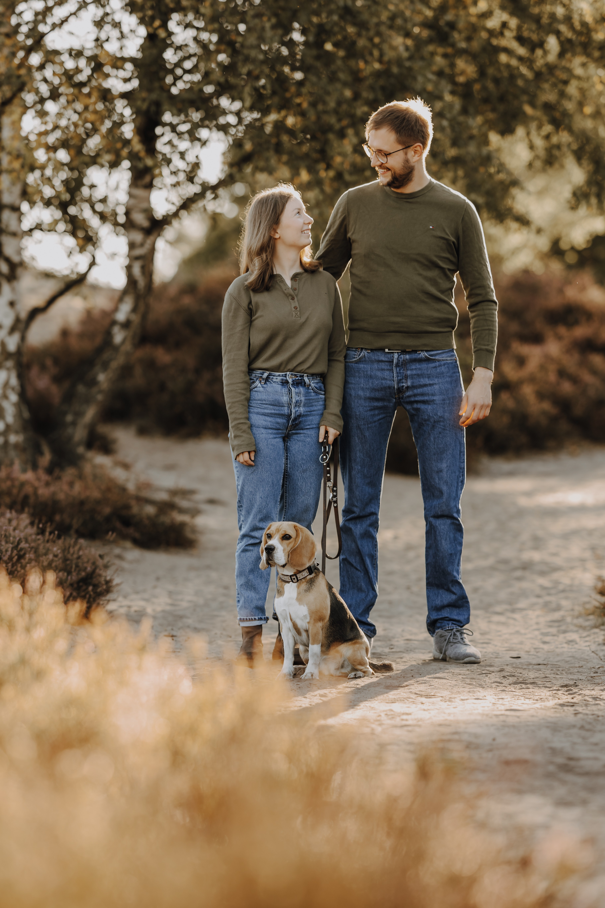
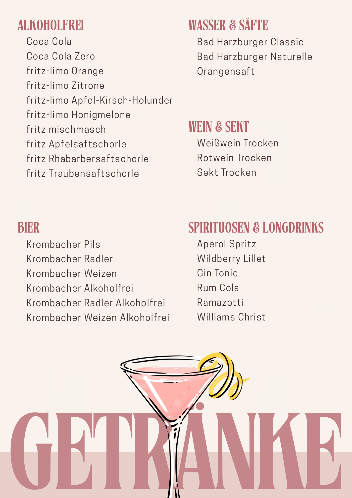

Willkommen zu unserer Hochzeit

Wir freuen uns, diesen besonderen Tag mit euch zu feiern!

Herunterladen{kind=link}
Ankunft der Gäste
Wir freuen uns, euch zu unserer Hochzeit willkommen zu heißen.
Kaffee & Kuchen
Gemeinsam schneiden wir die Hochzeitstorte an. Anschließend gibt es ein leckeres Kuchenbuffet und Kaffee.
Abendessen
Gemeinsames Abendessen vom Grillbuffet
Im Anschluss: Musik & Snacks. Wer Lust hat, kann tanzen oder den Abend bei guten Gesprächen genießen. Als Stärkung für die Nacht wartet frisches Popcorn direkt aus der Maschine auf euch, zusammen mit anderen kleinen Snacks.
Wir haben eine Auswahl an Spielen für euch vorbereitet, die ihr gerne nutzen könnt. Für alle Spiele, die etwas mehr Platz benötigen - wie zum Beispiel eine ausgiebige Partie Wikinger Schach - ist die große Wiese hinter dem Haus (Schützenplatz) der perfekte Ort. Ihr gelangt direkt über die Pforte hinter dem Gartenhäuschen auf die Wiese. Wir wünschen euch ganz viel Spaß!
Ringwerfen ist ein ruhiges, leichtes Geschicklichkeitsspiel für Kinder und Erwachsene. Es kann einzeln, zu zweit oder in Teams gespielt werden.
Ziel des Spiels
Mit den Wurfringen möglichst viele Punkte erzielen, indem man die Ringe über die Pins mit den höchsten Punktzahlen wirft.
So wird gespielt
- Das Zielkreuz mit den 5 Pins wird auf den Boden gelegt.
- Die Pins sind mit verschiedenen Punktzahlen beschriftet.
- Eine Grundlinie wird in ca. 4 m Entfernung markiert (Abstand kann je nach Alter und Fähigkeit angepasst werden).
- Jeder Spieler oder jedes Team wirft nacheinander mit 1 bis 5 Ringen.
- Jeder Ring, der über einem Pin landet, bringt die entsprechende Punktzahl.
Wertung
- Die Punkte aller geworfenen Ringe werden addiert.
- Wer die höchste Gesamtpunktzahl erreicht, gewinnt die Runde.
Varianten
- Bis zu 5 Spieler können gleichzeitig mit je einem Ring antreten.
- Alternativ können beliebig viele Spieler mit 5 oder weniger Ringen spielen.
- Nach jedem Durchgang kann die Entfernung zur Grundlinie vergrößert werden, um den Schwierigkeitsgrad zu steigern.
Riesenmikado ist die XXL-Variante des klassischen Mikado-Spiels. Es kann einzeln, zu zweit oder in Teams gespielt werden.
Ziel des Spiels
Die Stäbe sollen nacheinander aufgehoben werden, ohne dass sich ein anderer Stab bewegt. Je schwieriger der Stab, desto mehr Punkte gibt es.
So wird gespielt
- Die Stäbe werden zu einem Bündel zusammengehalten und fallen gelassen, sodass sie sich kreuz und quer verteilen.
- Gespielt wird reihum: Wer an der Reihe ist, versucht einen Stab aufzunehmen, ohne die anderen zu bewegen.
- Gelingt es, darf der Spieler weitermachen. Bewegt sich ein anderer Stab, ist der nächste Spieler dran.
- In Teams wird gemeinsam gesammelt - die Punkte werden am Ende addiert.
Punktewertung
- Jeder Stab hat eine bestimmte Anzahl an Farbstrichen.
- Beim Einsammeln werden die Striche gezählt.
- Am Ende gewinnt das Team oder der Spieler mit den meisten gesammelten Strichen.
Spielende
- Wenn alle Stäbe eingesammelt wurden, werden die Punkte gezählt.
- Das Team oder der Spieler mit der höchsten Punktzahl gewinnt.
Shuffleboard ist ein Geschicklichkeitsspiel, bei dem Pucks über eine Bahn geschoben werden müssen. Es kann einzeln oder in Teams gespielt werden.
Ziel des Spiels
Die Pucks möglichst nah an das Ziel schieben oder in die höchsten Punktezonen platzieren.
So wird gespielt
- Die Spielbahn wird auf einer ebenen Fläche aufgebaut.
- Jeder Spieler oder jedes Team erhält Pucks.
- Abwechselnd werden die Pucks über die Bahn geschoben.
- Ziel ist es, die Pucks in den markierten Zonen zu platzieren.
Wertung
- Je nach Zone, in der der Puck landet, gibt es unterschiedliche Punkte.
- Pucks, die von der Bahn fallen, zählen nicht.
- Das Team oder der Spieler mit der höchsten Punktzahl gewinnt.
Leitergolf (auch Leiterwurfspiel genannt) ist ein unterhaltsames Wurfspiel für draußen. Es kann einzeln, zu zweit oder in Teams gespielt werden.
Ziel des Spiels
Mit den Bolas (zwei durch ein Seil verbundene Bälle) möglichst viele Punkte erzielen, indem man sie auf die Sprossen der Leiter wirft.
So wird gespielt
- Die Leitergestelle werden im Abstand von ca. 5 Metern aufgestellt.
- Jeder Spieler oder jedes Team erhält 3 Bolas (meist in verschiedenen Farben).
- Abwechselnd werfen die Spieler ihre Bolas auf die gegnerische Leiter.
- Die Bolas sollen sich um die Sprossen wickeln und dort hängen bleiben.
- Jede Sprosse hat einen unterschiedlichen Punktewert (meist: obere Sprosse 3 Punkte, mittlere 2 Punkte, untere 1 Punkt).
Wertung
- Nach jeder Runde werden die Punkte gezählt.
- Nur Bolas, die fest um eine Sprosse gewickelt sind, zählen.
- Das Spiel wird bis zu einer vereinbarten Punktzahl gespielt (z.B. 21 Punkte).
- Wer zuerst die Zielpunktzahl erreicht, gewinnt.
Wikinger Schach, auch Kubb genannt, ist ein traditionelles skandinavisches Wurfspiel für draußen. Es wird in zwei Teams gespielt.
Ziel des Spiels
Alle gegnerischen Kubbs (Holzklötze) und zum Schluss den König in der Spielfeldmitte umwerfen.
So wird gespielt
- Das Spielfeld (ca. 5x8 Meter) wird mit den Eckstäben markiert.
- Je 5 Kubbs werden auf den beiden Grundlinien aufgestellt, der König steht in der Mitte.
- Die Teams werfen abwechselnd mit 6 Wurfhölzern auf die gegnerischen Kubbs.
- Umgeworfene Kubbs werden vom Gegner ins eigene Feld geworfen und dort wieder aufgestellt (Feldkubbs).
- In der nächsten Runde müssen zuerst alle Feldkubbs umgeworfen werden, bevor die Basiskubbs angegriffen werden dürfen.
Spielende
- Wenn alle gegnerischen Kubbs umgeworfen sind, darf das Team versuchen, den König zu treffen.
- Wer den König umwirft, gewinnt das Spiel.
- Achtung: Wird der König zu früh umgeworfen, verliert das Team sofort!
Stakk ist ein modernes Outdoor-Wurfspiel, das Geschicklichkeit und Strategie vereint. Es kann einzeln oder in Teams gespielt werden.
Ziel des Spiels
Mit den Wurfscheiben die eigenen Stapel bauen und die gegnerischen Stapel umwerfen, um als Erstes eine Reihe von 5 Scheiben zu erreichen.
So wird gespielt
- Die Spieler stehen in ca. 4-6 Meter Entfernung voneinander.
- Jeder Spieler oder jedes Team erhält 8 Wurfscheiben in einer Farbe.
- Abwechselnd werfen die Spieler ihre Scheiben auf die gegnerische Seite.
- Eine Scheibe, die auf der Spielfläche landet, wird zum Stapel hinzugefügt.
- Trifft man einen gegnerischen Stapel, wird dieser verkleinert oder zerstört.
Wertung und Spielende
- Wer zuerst einen Stapel von 5 Scheiben erreicht, gewinnt das Spiel.
- Alternativ kann auf Punkte gespielt werden: Jede Scheibe im Stapel = 1 Punkt.
- Das Team mit den meisten Punkten nach einer festgelegten Anzahl von Runden gewinnt.
Gästebuch
Unser Gästebuch liegt für euch bereit und freut sich über liebe Worte, Erinnerungen und kleine Wünsche für uns. Wenn ihr mögt, könnt ihr eure Fotos aus der Fotobox direkt ausdrucken und dazukleben.
Fotobox
Im Wohnzimmer steht eine Fotobox für euch bereit! Haltet die schönsten Momente des Tages fest – alle Fotos werden automatisch digital gespeichert. Für unser Gästebuch und als persönliche Erinnerung habt ihr die Möglichkeit, eure Lieblingsbilder direkt auszudrucken. Da die Druckkapazität begrenzt ist, bitten wir euch, damit sorgsam umzugehen.
Schnappschüsse
Habt ihr im Laufe des Tages besondere, lustige oder emotionale Momente mit eurem Smartphone eingefangen? Wir würden uns riesig freuen, wenn ihr diese Erinnerungen mit uns teilt und sie in unser gemeinsames Fotoalbum hochladet. Scannt dafür einfach ganz unkompliziert den QR-Code. Falls ihr etwas Inspiration für tolle Motive sucht, schaut mal hier vorbei:
Inspiration
Mache ein Foto mit dem Gast, der den kürzesten Anreiseweg hatte.
Fotografiere das lustigste Tanzbild
Halte einen besonderen Moment beim Spielen fest
Mache ein Selfie mit dem Brautpaar
Fotografiere das schönste Lächeln des Tages
Mache ein Gruppenfoto mit deinem Tisch
Fotografiere das schönste Outfit
Halte einen spontanen Moment fest
Mache ein Foto beim Grillbuffet
Mache ein Foto mit einer Person, die du vor dieser Hochzeit noch nicht kanntest.
Hinweis: Aus datenschutzrechtlichen Gründen steht das gemeinsame Fotoalbum nur über einen QR-Code zur Verfügung und ist nicht auf dieser Webseite zu finden. Den QR-Code findet ihr vor Ort bei der Hochzeit.
Hilf uns, die perfekte Playlist für unsere Hochzeit zu erstellen! Füge deine Lieblingssongs hinzu und feiere mit uns zu deiner Musik.
Unsere kollaborative Hochzeits-Playlist
Unsere Spotify-Playlist ist kollaborativ – das bedeutet, jeder kann Songs hinzufügen!
Zur Spotify PlaylistSo fügst du Songs hinzu:
- Klicke auf den Button oben, um zur Playlist zu gelangen
- Öffne die Playlist in der Spotify-App (falls du sie installiert hast)
- Tippe auf die drei Punkte (...) und wähle "Zur Playlist hinzufügen"
- Oder: Suche deinen Lieblingssong und füge ihn direkt hinzu
Tipp: Wenn du Spotify noch nicht hast, kannst du es kostenlos herunterladen!